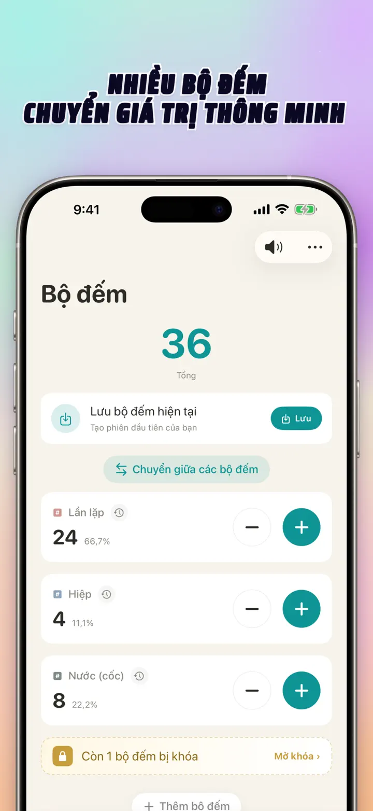
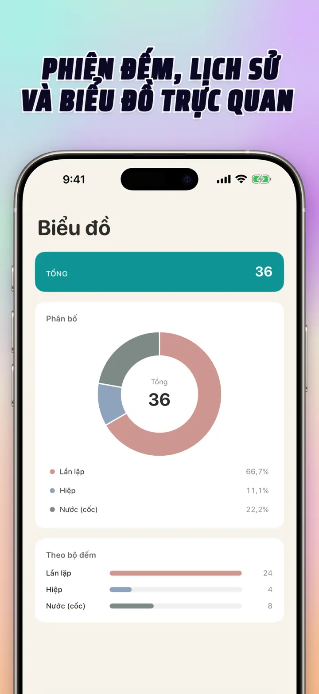
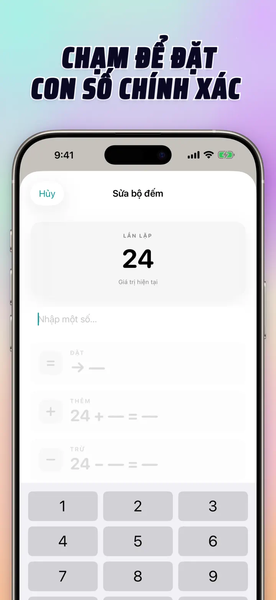
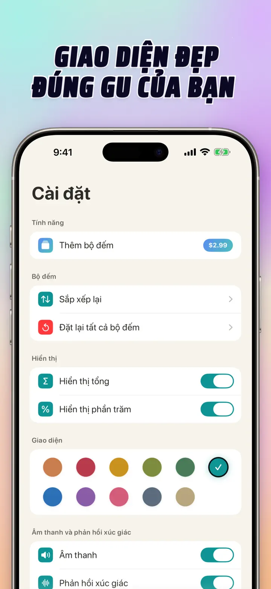
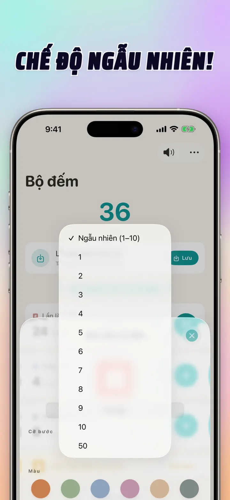

Bộ đếm 123
Sync Watch, clicker, điểm
Mới: widget Màn hình chính — chạm +/- ngay trên widget mà không cần mở ứng dụng. Bộ đếm và clicker, sync Apple Watch, chế độ ngẫu nhiên, biểu đồ và lịch sử.
Tải xuống từ App StoreGiới thiệu ứng dụng
Bộ đếm 123 là bộ đếm nhanh, linh hoạt cho iPhone, iPad và Apple Watch. Đặt tên cho từng bộ đếm, chọn màu và đếm bất cứ thứ gì — set tập gym, hàng đan len, tràng hạt, điểm trong lớp, kiểm kho, điểm trận đấu. Mọi dữ liệu lưu cục bộ trên máy, hoạt động ngoại tuyến.
BỘ ĐẾM TÙY CHỈNH
- Tạo bộ đếm riêng cho hoạt động, trò chơi, thói quen hoặc danh sách
- Tên và màu riêng cho từng bộ đếm
- Kéo để sắp xếp lại
- Giữ để đếm nhanh liên tục
- Ngoại tuyến hoàn toàn — không đăng ký, không đám mây
NHẬP TRỰC TIẾP & THAO TÁC HÀNG LOẠT
- Chạm vào bộ đếm để đặt giá trị khởi đầu trực tiếp — không cần reset về 0
- +/- hàng loạt: thay đổi bộ đếm bằng số bất kỳ chỉ một chạm
- Chuyển: di chuyển giá trị từ bộ đếm này sang bộ đếm khác mà không cần thao tác kép
- Bước tùy chỉnh: một chạm thêm 1, 5, 10, 100 hoặc số bạn chọn
- Xem trước trực tiếp mỗi thay đổi
CHẾ ĐỘ NGẪU NHIÊN
- Cho bộ đếm chọn giá trị mới từ 1 đến 10 sau mỗi lần chạm
- Cộng hoặc trừ giá trị ngẫu nhiên bằng nút + và -
- Hữu ích cho bài tập, trò chơi, phần thưởng, lớp học và thói quen luyện tập
- Mỗi lần chạm ngẫu nhiên được lưu trong lịch sử bộ đếm
TỔNG & BIỂU ĐỒ
- Tổng tất cả bộ đếm chỉ trong một cái nhìn
- Chế độ phần trăm: mỗi bộ đếm đóng góp bao nhiêu vào tổng
- Biểu đồ cột tương tác — chuyển giữa giá trị (#) và phần trăm (%)
- Sắp xếp theo giá trị để có bảng xếp hạng tức thì
LỊCH SỬ & CHIA SẺ
- Lịch sử đầy đủ: mọi thao tác cộng, trừ, chỉnh sửa đều được ghi lại
- Lưu bộ đếm và tải lại bất cứ lúc nào
- Chia sẻ cấu hình với đội, học sinh hay bạn bè
- Xem lịch sử dạng nhật ký theo ngày, phiên được nhóm hoặc thống kê ngày/tuần/tháng
SYNC TRỰC TIẾP VỚI APPLE WATCH
- Cập nhật bộ đếm trên iPhone hoặc Apple Watch, cả hai sẽ luôn đồng bộ
- Ứng dụng watchOS gốc thực sự — không chỉ là bản đồng hành
- Tên, màu và giá trị đồng bộ trên cổ tay
- Chạm để đếm, giữ để lặp — trực tiếp từ đồng hồ
- Hoạt động độc lập khi iPhone không bên cạnh
CHO iPhone, iPad & APPLE WATCH
- Bố cục thích ứng cho mọi kích thước màn hình
- iPad hiển thị nhiều bộ đếm cùng lúc, hỗ trợ Split View
- Quyền riêng tư trên hết: lưu cục bộ, không đám mây, không tài khoản
PHÙ HỢP CHO
- Set và rep tại phòng gym
- Hàng đan len và mũi móc
- Tràng hạt, tasbih, chuỗi hạt cầu nguyện
- Điểm trong lớp và điểm danh
- Bóng chuyền, bóng rổ, bóng đá — tính điểm nhanh
- Bóng bàn
- Kiểm kho và đếm tồn
- Cờ vua, bài, tam cúc, tiến lên
- Vòng hồ bơi và đường chạy
- Quan sát chim
- Đếm khách tại sự kiện
- Theo dõi thói quen và mục tiêu
Tải Bộ đếm 123 và làm cho mọi phép đếm trở nên đơn giản — rõ ràng, nhanh chóng, riêng tư.
Chính sách quyền riêng tư: https://masawata.net/privacy-policy.html Điều khoản sử dụng: https://www.apple.com/legal/internet-services/itunes/dev/stdeula/
Ảnh chụp màn hình





Bộ đếm 123
Mới: widget Màn hình chính — chạm +/- ngay trên widget mà không cần mở ứng dụng. Bộ đếm và clicker, sync Apple Watch, chế độ ngẫu nhiên, biểu đồ và lịch sử.
Tải xuống từ App Store